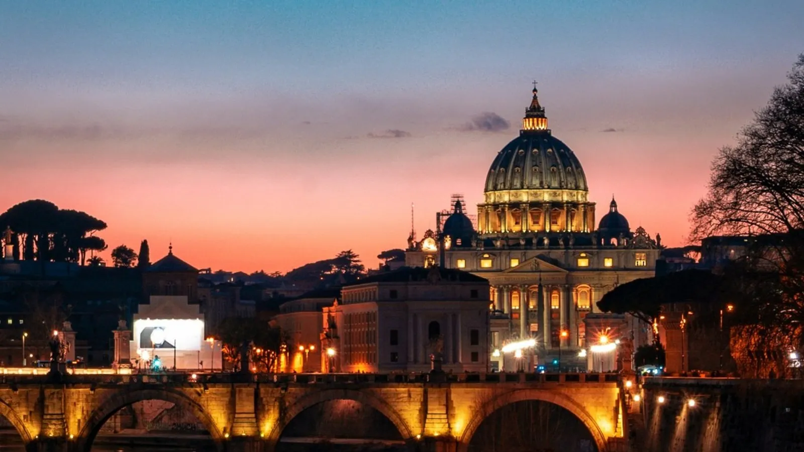

In breve
Prenota entrambi online prima di partire, sui siti ufficiali o tramite un rivenditore, e scegli un orario di mattina. Il biglietto base del Colosseo costa 18 € e vale anche per Foro Romano e Palatino; i Musei Vaticani costano 25 € online e includono la Cappella Sistina. Tutti i biglietti sono nominativi: porta il documento con cui hai prenotato.
Biglietti del Colosseo
| Biglietto | Cosa vedi | Prezzo 2026 |
|---|---|---|
| 24h Colosseo, Foro, Palatino | Colosseo livelli 1–2, Foro Romano, Palatino | 18 € |
| Full Experience – Sotterranei e Arena | Anche i sotterranei (ipogei) e l'arena, valido 2 giorni | 24 € |
| Full Experience – Attico | Anche i livelli alti con l'ascensore panoramico | 24 € |
- I biglietti ufficiali si comprano su ticketing.colosseo.it ed escono circa 30 giorni prima. La Full Experience finisce per prima.
- I minori di 18 anni entrano gratis, ma devono ritirare il biglietto in biglietteria.
- Esauriti sul sito ufficiale? Cerca biglietti e tour del Colosseo su Tiqets: costano di più ma spesso hanno ancora posti.
Musei Vaticani e Cappella Sistina
- Prezzo: 20 € più 5 € di prenotazione online, quindi 25 €. La Cappella Sistina è inclusa.
- Orari: dal lunedì al sabato 8:00–20:00, ultimo ingresso alle 18:00. Chiusi la domenica, tranne l'ultima del mese.
- Unico sito ufficiale: tickets.museivaticani.va. I biglietti escono circa due mesi prima e d'estate finiscono settimane prima.
- Abbigliamento: spalle e ginocchia coperte, anche per la Basilica di San Pietro.
- Nessun orario libero sul sito ufficiale? I biglietti salta-fila dei Vaticani su Tiqets sono il solito piano B.
Giorni gratis
- Musei Vaticani: gratis l'ultima domenica del mese, 9:00–14:00 (ultimo ingresso 12:30), con code lunghissime.
- Colosseo: ingresso gratuito in alcune prime domeniche del mese, con biglietto da ritirare sul posto; controlla il calendario ufficiale.
I giorni gratis fanno risparmiare soldi ma costano ore di coda: in un viaggio breve conviene quasi sempre pagare.
Come organizzare la giornata
Non mettere mai i due nella stessa mattina. Un buon piano: Colosseo e Foro una mattina, Musei Vaticani e San Pietro un'altra, con un pomeriggio tranquillo in mezzo. Per arrivarci a piedi dormi a Monti (Colosseo) o a Prati (Vaticano): confronta gli hotel a Roma.
Consigli
- Attenzione ai finti siti "ufficiali" che rivendono a prezzi più alti: controlla l'indirizzo prima di pagare.
- Arrivi in aereo? Leggi Da Fiumicino a Roma. Visiti altre città? Vedi Roma, Firenze e Venezia in 7 giorni.
- D'estate porta acqua e visita il Foro presto: c'è poca ombra.
Prezzi e orari sono indicativi e possono cambiare: controlla sempre prima di partire.
Verificato sulle fonti ufficiali. Regole e prezzi cambiano: controlla sempre su questi siti prima di partire.
Organizza la visita a Roma
Alcuni link sono affiliati: se prenoti tramite loro non paghi nulla in più e aiuti 687 a restare gratuito.
I tuoi giorni a Roma, senza code.
In 687 Italy Colosseo e Vaticano entrano nella giornata nell'ordine giusto, con la metro tra uno e l'altro e dove mangiare vicino. NOW ricostruisce il resto della giornata se una coda o il meteo cambiano i piani.